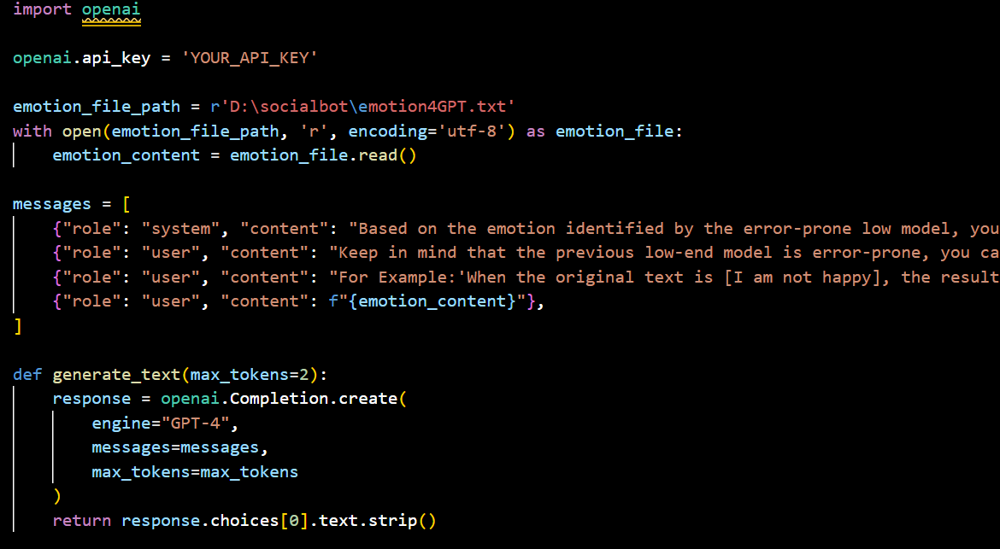

We are happy to share that over the weekend after the last blog update, we achieved our goal of successfully integrating all modes into our system, congratulations to ourselves!
Self-Evaluation
In this project, we have successfully built a complete and functional social robot system with the following advantages:

- Modular Design: We adopted a plug-and-play approach for all modules, providing the system with rich expandability and versatility. This means that each module can run independently or in combination, making the system easy to update and expand as a whole.
- Upgradability: To quickly deploy the system, we chose models that are user-friendly and efficient in their respective domains, such as GPT3.5, BERT, VGG, etc. However, we also considered that users might want to replace their own models to adapt to specific audiences or use state-of-the-art models for superior performance. Therefore, we have reserved interfaces for users to replace models to meet different needs.
- Accessibility: The system does not directly use multimodal models to handle mixed inputs. We recognize that our target users may not be able to type, speak, or display expressions. Instead, the modular design allows for various combinations, accommodating different user needs and abilities.
- Intelligence: The system integrates a large language model (LLM) to perform modal blending and decision-making. Leveraging the capabilities of LLM enhances the system's potential usability, providing increased intelligence and adaptability.
But at the same time, because the goal is to build a system, the project has lost some depth pursuit while ensuring the breadth and completeness as much as possible. Our final position is a complete and usable social robot system, but there are opportunities for further iterations.
DEMO
For a demonstration of the final product, you can watch the following video on YouTube or on OneDrive(More clearer).
Our final system is command-line-based, utilizing various Python programs as outlined in the documentation to perform specific functions. To facilitate demonstration, we conducted functional tests on the deployed web-based Large Language Model (LLM), such as ChatGPT. However, we have retained the functionality to call APIs as well.
- Voice Module: The Voice Module initiates a recording sequence, capturing a precise five-second audio segment. Subsequent to this, analytical outcomes are acquired and meticulously stored within a designated file.
- Facial Expression Module: The Facial Expression Module dynamically identifies and records all expressions occurring within a five-second interval. The definitive expression label is determined by selecting the most frequently occurring expression, providing a nuanced representation. This result is then systematically archived in a dedicated file.
- Text Module: The Text Module introduces a structured UI, offering users an interactive platform for input. Real-time processing of input yields instantaneous results, delivering dynamic insights. Simultaneously, both the original text and the corresponding processed results are systematically archived in the system's repository.
- Prompt Post-processing Module: Post the completion of preceding modules, the "clear" program can be executed to reset the output for a pristine user experience. This module presents two distinct pathways:
- Directly adopting a streamlined output as the definitive input for subsequent modules—a strategy ideal for systems deploying robust and reliable analysis models, including individualized model deployments.
- The integration of the Large Language Model (LLM) becomes pivotal to counteract any limitations in the previously chosen models. The advanced output method encapsulates the idiosyncrasies of prior modules, utilizing prompt engineering techniques to provide affirmative cues to LLM (such as emphasizing potential pitfalls in other models) and supplementary information for enhanced judgment.
- LLM Operation Module: Following the acquisition of analysis results, the system seamlessly transitions into a second phase of LLM iteration, prompting inquiries about available subsequent actions. Leveraging the assistant API's features, code generation ensues, determining the course of further actions based on personalized recommendations derived from LLM. The integration of text-to-speech technology and our meticulously designed UI serves as robust support for seamless deployment.

Discussion & Future Work
- Establishment of User-Friendly UI: Presently, all operations are command-line-based. Introducing an aesthetically pleasing and user-friendly UI will significantly reduce the entry barrier for usage and deployment. Additionally, the UI design aims to enhance emotional support through thoughtful design elements.
- Upgrade of Internal Base Models: To expedite system development and achieve relatively faster processing speeds and efficiency, we initially adopted models with good cost-effectiveness. However, with technological advancements, the emergence of more State of the Art (SOTA) models promises increased assistance and improved accuracy.
- Fine-tuning or Alternative LLMs: With the proliferation of various Large Language Models (LLMs) in the market, each model exhibits relative advantages. Utilizing finely-tuned or vertically specialized LLMs in our specific domain can undoubtedly provide enhanced support.
- Personalized Subsequent Operations: The current LLM operations section relies on suggestions generated by LLM, and the available categories may be somewhat limited. Exploring personalized subsequent operations might yield improved outcomes, tailored to specific requirements.
- Introduction of Multi-Agent System LLM: Systems like AutoGen, featuring Multi-Agent LLM, have demonstrated remarkable potential. Incorporating such systems can offer more robust and stable support to our framework.
This project introduces a modular and extensible social robot system. The system is designed with modularity, allowing each component to be flexibly upgraded and combined. Additionally, it includes an interface for model replacement to adapt to diverse requirements. Recognizing user diversity, the system supports the processing of various modal combinations, not solely relying on multimodal inputs. The integration of a large language model enhances decision-making and understanding, elevating the system's level of intelligence.
Nevertheless, we acknowledge that utilizing updated models and larger-scale models can yield improved marginal utility. Introducing a user interface will further reduce entry barriers, a focus for our upcoming work. Additionally, the proposal of incorporating vertical Large Language Models (LLMs) suggests enhancing interpretability and enriching the system's capabilities. Overall, through modular and extensible design, considering accessibility and user diversity, and harnessing the power of language models, this system represents a new direction in social robot development.